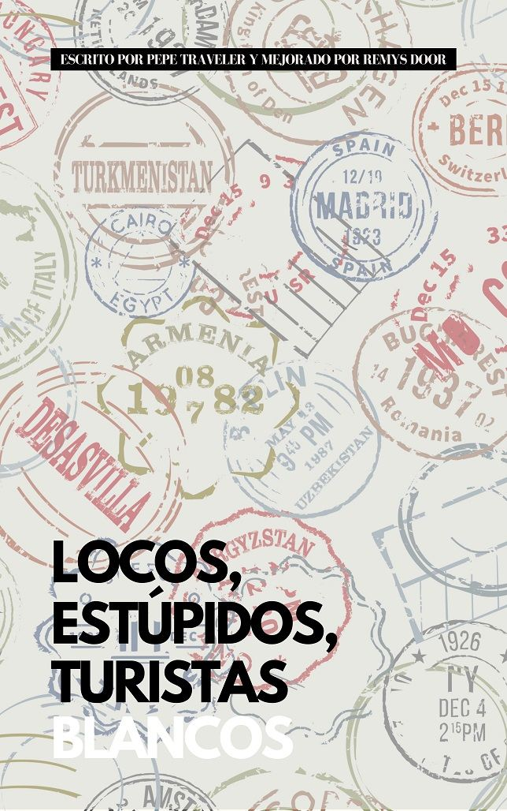

01 / 06NOVELA DE FICCION, AVENTURAS, VIAJES, HUMOR Y ALGO DE AMOR
Locos, estúpidos, turistas blancos
En la Nochevieja de 2016, cuatro locos se escapan de un psiquiátrico en España. Ellos afirman no estar locos mientras se embarcan en una gran aentura que les llevará a vivir intensamente un montón de aventuras psicodélicas, dramáticas y divertidas por Europa del Este, Oriente Medio y Asia Central.
Esta novela te va a hacer replantearte si en realidad, todos estamos locos y simplemente nos negamos a reconocerlo porque es más sencillo vivir así.
Te prometo que vas a reir, a llorar y a emocionarte con cada uno de estos cuatro locos que lo único que buscan en su camino es la libertad.